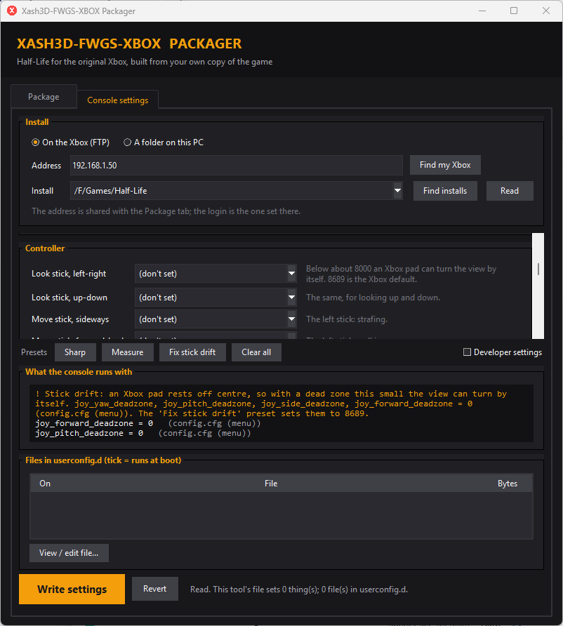
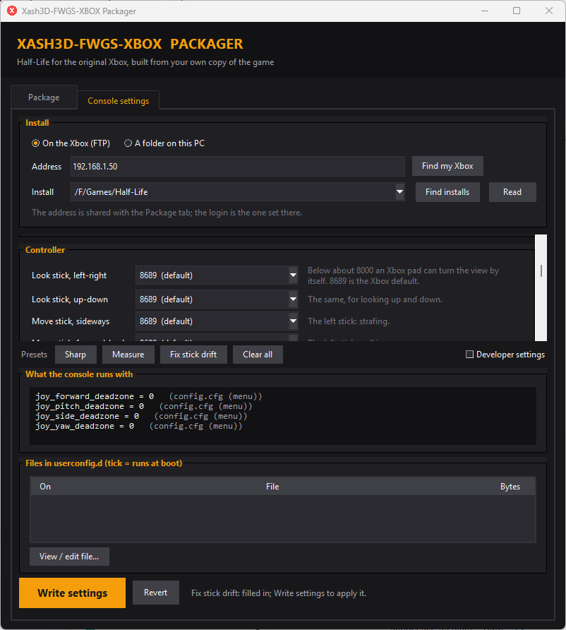

Troubleshooting
Problems people have run into, and what to do about each.
A saved game from the PC has no weapons, or behaves wrong
Saved games from the PC are not supported. A save made by Half-Life on a PC (Steam's, or a PC build of Xash3D) was written for that game's own code. On the console it may load, but it can come up broken: no inventory, things in the level that do not react, and other faults that show only later.
Packager versions up to v0.2.0 copied the PC's SAVE folder into the game folder along with the rest of the
game files, so those saves can appear in the console's Load Game list.
What to do: do not load them. Start a new game, or load a save made on the console. From v0.2.1 the packager leaves the PC's saves out of an export. It does not remove the ones an earlier export already put on the console.
Saves made on the console are not affected. They are kept apart from the game folder, in the console's own save area, and no packager version writes there.
No sound, or only music, in xemu or xbased
In v0.1.x neither emulator played the game's effects or speech: with Hardware audio off there was no sound at all, and with it on only the music. Both emulators give the chip's AC97 output no sound, and the sound settings that use it (the default output, and the room effect and sounds on voices of Hardware audio) go through it.
Fix: use the packager from v0.2.0 or later and export again. The game finds
out at start whether it runs on an emulator (the audio chip's S/PDIF output never plays there) and uses the output the
emulators do play. Nothing needs changing in the menus. A console keeps its own settings; the file sndbackend.txt in
the game's save folder says emulator: yes or emulator: no.
The view turns by itself
With nobody touching the controller, the camera slowly turns, usually to the left. This is stick drift. Original Xbox pads rest well off centre: an untouched right stick can read about a fifth of the way over. The engine ignores a stick inside its dead zone, and the Xbox build's default is 8689, which is wide enough. A dead zone of 0 lets the resting offset turn the view.
Where the 0 came from: before v0.1.2 the packager copied PC Half-Life's config.cfg to the console, and that
file sets all four stick dead zones to 0. On the console's first start it ran, and the console then saved those zeros as its
own settings, so they stayed. From v0.1.2 the export leaves the PC's settings behind. A console that already ran the old
export still has them; here is how to fix it.
valve/userconfig.d/60-deadzone.cfg (over FTP, for example
/F/Games/Half-Life/valve/userconfig.d/60-deadzone.cfg) containing these four lines, then start the game:
joy_forward_deadzone "8689", joy_side_deadzone "8689", joy_pitch_deadzone "8689",
joy_yaw_deadzone "8689". The details are below.Fix it in the game (v0.1.3 or later)
- Open Options, then Controller, then Settings.
- The right-hand column, Stick dead zones, has four sliders: look left-right, look up-down, move sideways and move forward-back. The number is in each slider's label.
- Raise the slider of the stick that moves until it stops. The Xbox default is 8689. A worn stick can need more, up to the end of the slider at 16000.
- Leave the screen with B or Done: both save. (Before v0.1.3, B closed the screen and dropped the change.)
The first start of v0.1.3 also sets any saved dead zone under 4096 back to 8689, once, so a console that ran the PC's settings is repaired without touching anything. A value you set afterwards is left alone.
userconfig.d/50-packager.cfg, which runs after the console's saved settings
at every start, so it puts them back each time. Set the four Controller rows to "(don't set)" there and press Write
settings, or delete those four lines from the file, and the menu's values will hold.Fix it from the packager (v0.1.2 or later)
- Put the console on the dashboard (the game must not be running: FTP does not work inside the game).
- Open the packager, go to Console settings, press Find my Xbox and Find installs, choose the Half-Life install and press Read.
- If a saved dead zone is too small, What the console runs with says so first, in orange.
- Press the Fix stick drift preset. The four Controller rows fill in with 8689 and the warning goes.
- Press Write settings, then start the game. The fix is written to
userconfig.d/50-packager.cfg, which runs after the console's saved settings on every start.
The Controller group also lets you pick another value: lower makes the stick more sensitive near the centre, but under about 8000 a pad that rests off centre will drift again.




Or by hand, without the packager
Create a file called 60-deadzone.cfg in the console's game folder (not in
UDATA), in valve/userconfig.d/ next to 50-packager.cfg. Make the folder if it is not
there. For example /F/Games/Half-Life/valve/userconfig.d/60-deadzone.cfg (some FTP servers show the drive as
/HDD0-F/). Put these four lines in it:
joy_forward_deadzone "8689"
joy_side_deadzone "8689"
joy_pitch_deadzone "8689"
joy_yaw_deadzone "8689"Or start the settings again
Delete both copies of config.cfg: the one in the game folder (Games/Half-Life/valve/,
which the old export put there) and the one the console saved (E:\UDATA\FFFF0002\valve\valve\). Deleting only
the saved one is not enough: the console then falls back to the game-folder copy and saves the zeros again. The game starts
with the Xbox defaults, but everything saved in the menu (volume, display, game options, changed controls) is lost. Settings
written by the packager's Console settings tab survive, because they live in userconfig.d.
Windows says "Windows protected your PC"
The packager's exe is not signed yet, so Windows does not know the publisher. Check the zip against
SHA256SUMS.txt on the release page, then choose More info and Run anyway.
See the code signing policy for where signing stands.
The packager cannot reach the console, or the upload stops
- The game must not be running. The console's FTP server is part of the dashboard; it is not there while a game is up. Go back to the dashboard first.
- One connection at a time. Close any other FTP program that is connected to the console.
- "421 Too many users". Seen with the UnleashX dashboard: a program that died in the middle of a transfer can keep its login slot for about half an hour, and every new login is refused. Restarting the console clears it.
- Press Find my Xbox again if the console's address changed: it is usually handed out by your router and can differ from one day to the next.
The world draws black and only models show
A loose .bsp sitting beside a baked .mpak is loaded instead of the archive, and the Xbox renderer
then has no world to draw. The packager leaves the .bsp of every baked map off the console. If you copied files
across by hand, remove the retail .bsp of each map that has an .mpak.